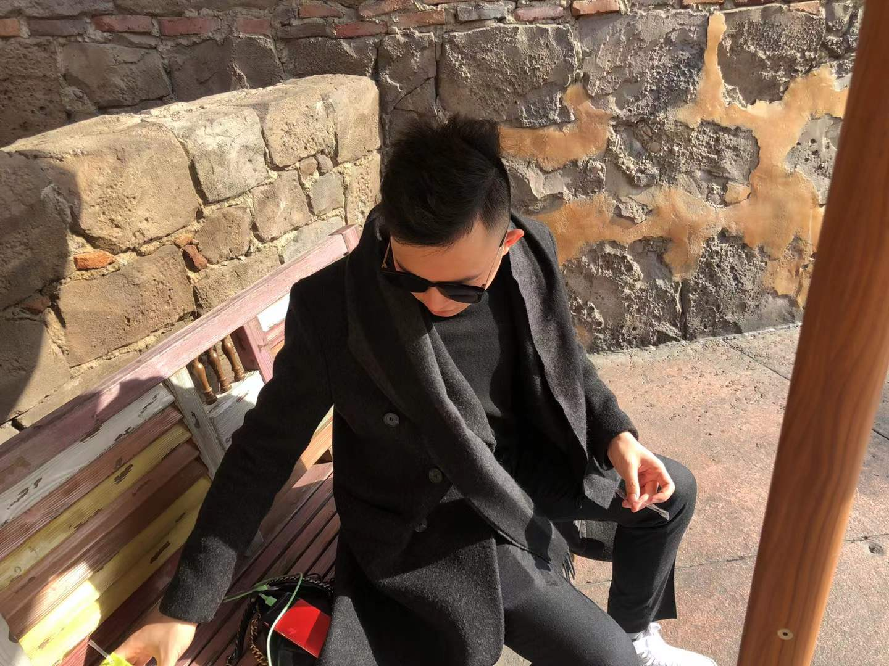
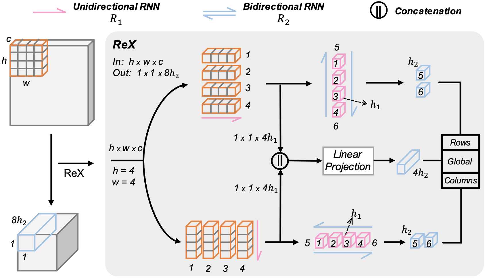
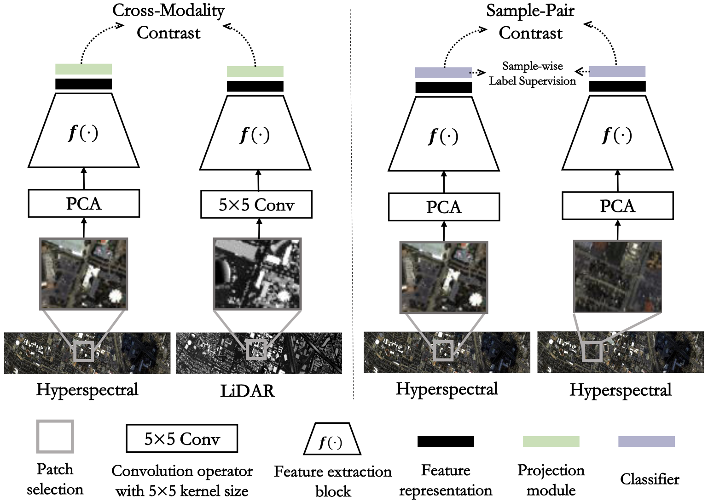
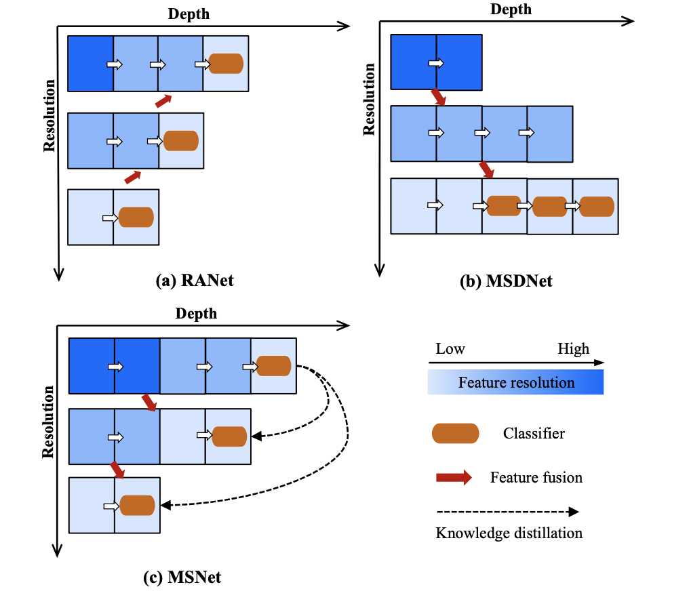

|  |
Xuwei Qian (钱旭威)M.Eng. StudentNanjing University of Information Science & TechnologyCV (2022.7.29) • Google Scholar • GitHub |
About Me
I am a third year M.Eng. student in B-DAT of the School of Automation at Nanjing University of Information Science & Technology, advised by Prof. Renlong Hang and Prof. Qingshan Liu. Before that, I got my B.Eng. from Southeast University Chengxian College.
My research interests lie in the efficient training and inference of deep learning models.
News
2022.07: Cross-Modality Contrastive Learning is Accepted by TGRS (IF=8.12).
2022.06: Awarded by the Outstanding Graduate Dissertation 2022 & Outstanding Graduate 2022.
2022.04: One Project is Granted a National Invention Patent.
2021.12: Our ReX is Accepted by AAAI 2022.
2020.11: Not All Images are Worth using High Resolution! Our MSNet is Available at Github.
Recent Publications & Preprints
|  |
ReX: An Efficient Approach to Reducing Memory Cost in Image Classification
Association for the Advancement of Artificial Intelligence (AAAI, CCF-A) 2022 Xuwei Qian, Renlong Hang, and Qinshan Liu [PDF] [Code (to be added)] [Poster] We propose a novel approach named recurrent aggregation operator (ReX), which uses recurrent neural networks (RNNs) to effectively aggregate intra-patch features within a large receptive field, while bypassing large early activations. |
|  |
Cross-Modality Contrastive Learning for Hyperspectral Image Classification
IEEE Transactions on Geoscience and Remote Sensing (TGRS, Q1, IF=8.12), 2022 Renlong Hang, Xuwei Qian, and Qinshan Liu [PDF] We first propose an unsupervised feature learning model using multimodel data, hyperspectral, and light detection and ranging (LiDAR) in particular. After that, we design a dual fine-tuning strategy to transfer the extracted features for hyperspectral image classification with small numbers of training samples. |
|  |
Multi-resolution Synergistic Networks for Adaptive Inference
IEEE Transactions on Circuits and Systems for Video Technology (TCSVT, Q1, IF=5.86) 2022 Renlong Hang, Xuwei Qian, and Qinshan Liu [PDF (to be added)] [Code] We develop a multi-resolution synergistic network (MSNet) to automatically configure its own optimal exit for each individual image, leading to a significant improvement in computational efficiency, both theoretically and empirically. |
|
Currently, I have several papers under review as well. I hope I will receive positive results. If you are interested in my research, please feel free to reach me.
|
Academic Service
|
Reviewer for TIP, TNNLS, TGRS, TCSVT, ...
Reviewer for NeurIPS, ICLR, CVPR, AAAI, ... |
Research Experience
|
B-DAT, Nanjing University of Information Science & Technology, China.
2019.10 - Present |
|
Intern, Engineering Research Center of Digital Forensics Ministry of Education, Nanjing, China.
2020.6 - 2021.6, advised by Prof. Kaihua Zhang. |
Education
|
M.Eng. in Pattern Recognition and Machine Learning, Nanjing University of Information Science & Technology, China.
2019.8 - Present |
|
B.Eng. in Electric Automation, Southeast University Chengxian College, China.
2014.8 - 2018.6 |
Selected Honors
- Outstanding Graduate of Nanjing University of Information Science & Technology, 2022
- Merit Student of Nanjing University of Information Science & Technology, 2022
- Scholarship for Outstanding Academic Performance, NUIST, 2019-2022 (Top 5%)
- First Prize in The 8th Undergraduate Mathematical Contest in Modeling, 2017 (Top 0.2%)
- Outstanding Graduate of Southeast University Chengxian College, 2018
Miscellaneous Facts
Now I mainly focus on my research and work hard to publish more papers.
Contact
|
Email: 20191223049@nuist.edu.cn
Address: Room N305, Academic Building No.3, NUIST, Nanjing
|